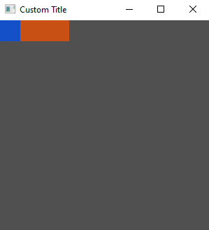

Tuix
Creating a Tuix Application
The most basic tuix app looks like this:
use tuix::*;
fn main() {
let mut app = Application::new(WindowDescription::new(), |state, window| {});
app.run();
}
The first argument passed to Application::new() is a new instance of a WindowDescription. This allows us to set the initial properties of the root window created for us by tuix.
The second argument passed to the new method is a closure which provides us with two variables:
-
state- This is a mutable reference to the UIState, which represents the 'global' data of the widgets in a gui application, such as layout and style properties. A mutable reference to state is passed around when building widgets, handling events, and drawing widgets. -
window- This is anEntityid to the window widget created for us by tuix. Every widget has an entity id which is used with state to modify UI properties.
Running this code with cargo run will produce an empty gray window with a width of 800 pixels and a height of 600 pixels. This isn't very interesting, so in the next section we'll cover changing window properties like size, title, and icon.
Setting Window Properties
Window properties can be set using the WindowDescription, which is the second argument of the closure passed to Application::new().
fn main() {
let app = Application::new(
WindowDescription::new().with_title("Custom Title"),
|state, window|{}
);
}
Using the builder pattern, setting window properties can be chained together:
fn main() {
let app = Application::new(
WindowDescription::new().with_title("Custom Title").with_inner_size(300, 300),
|state, window|{}
);
}
To see the full list of window properties that can be set, see the docs page on WindowDescription.
Adding a Widget
We can add a simple widget to our application like so:
use tuix::*;
fn main() {
let window_description = WindowDescription::new()
.with_title("Custom Title")
.with_inner_size(300, 300);
let app = Application::new(|state, window| {
// Add an Element widget
Element::new().build(state, window.entity(), |builder| builder);
},
);
app.run();
}
An Element widget is the simplest built-in widget that tuix has. It contains no data or event handling logic but can be styled like any other widget.
To add the element widget we first create a new instance with Element::new(), and then build the widget into the app with .build(state, window.entity(), |builder| builder).
-
The first argument,
state, is a mutable reference toStatefrom the application closure. -
The second argument is the entity id of the parent widget, in this case the window widget, which we get by calling
window.entity(). Each widget has anEntityid which can be used to get and set various widget properties stored inState. -
The third argument is a closure which provides us with a builder we can use to set properties of the newly created widget.
However, if you build and run this code you will still see an empty window.

This is because the Element widget has no built-in styling. To see the element, we can add a width, height, and background color using the builder:
use tuix::*;
fn main() {
let window_description = WindowDescription::new()
.with_title("Custom Title")
.with_inner_size(300, 300);
let app = Application::new(window_description, |state, window| {
Element::new().build(state, window.entity(), |builder| {
builder
.set_width(Pixels(100.0))
.set_height(Pixels(30.0))
.set_background_color(Color::rgb(200, 80, 20))
});
},
);
app.run();
}
This will produce a nice orange widget in the top left corner of the window with a width of 100 pixels and a height of 30 pixels. In the next section we will look at how to compose widgets together by adding a button to our element widget.

Composing Widgets
To demonstrate the composition of widgets, let's add a Button widget to the Element widget we have from before:
use tuix::*;
fn main() {
let window_description = WindowDescription::new()
.with_title("Custom Title")
.with_inner_size(300, 300);
let app = Application::new(window_description, |state, window| {
let container = Element::new().build(state, window.entity(), |builder|
builder
.set_width(Pixels(100.0))
.set_height(Pixels(30.0))
.set_background_color(Color::rgb(200,80,20))
);
// Add a Button widget as a child of the Element widget
Button::new().build(state, container, |builder|
builder
.set_width(Pixels(30.0))
.set_height(Pixels(30.0))
.set_background_color(Color::rgb(20,80,200))
);
});
app.run();
}
Building the button widget works in the same way as the element widget. However, notice that the building of the element is now bound to a container variable. This is the Entity id of the element widget and is returned by the .build(...) function.
This id is then used to specify the element widget as the parent of the button widget in the button's .build(...) function. The button widget style properties are also different to the element widget to help distinguish them.
Running this code produces:

Composing widgets forms a tree, where each widget has a single parent and zero or more children. In tuix this tree is called the Hierarchy, and can be found in State. This hierarchy is used to propagate events as well as to draw the elements in the correct order.
We will cover the Hierarchy in more detail when we start to handle events and custom drawing a little later. In the next section we'll cover the basics of widget layout.
Widget Layout
Tuix uses the layout properties defined on widgets to position them within the window and to determine their size.
To keep the quick start guide short, we will skip over the details of tuix's layout system. The layout system in tuix is quite comprehensive, and a more detailed guide can be found in the layout section.
Now, so far we have defined a width and a height for our widgets so now we will position them. The following example positions the element in the center of the window:
use tuix::*;
fn main() {
let window_description = WindowDescription::new()
.with_title("Custom Title")
.with_inner_size(300, 300);
let app = Application::new(window_description, |state, window| {
let container = Element::new().build(state, window.entity(), |builder|
builder
.set_width(Units::Pixels(100.0))
.set_height(Units::Pixels(30.0))
// Add stretch spacing to all sides of the element
.set_space_left(Stretch(1.0))
.set_space_right(Stretch(1.0))
.set_space_top(Stretch(1.0))
.set_space_bottom(Stretch(1.0))
.set_background_color(Color::rgb(200,80,20))
);
Button::new().build(state, container, |builder|
builder
.set_width(Pixels(30.0))
.set_height(Pixels(30.0))
.set_background_color(Color::rgb(20,80,200))
);
});
app.run();
}

We add space to each side of the element with units of Stretch(1.0). Note, we could have also used set_space() to apply the same spacing to all sides. Looking at the horizontal axis, because both left and right are set to stretch, the layout algorithm splits the free space between them, resulting in equal space either side of the element. The same is done for the verical axis, resulting in a centered element.
Notice also that the button has moved, remaining in the top left corner of the element. This is because widgets are positioned relative to their parents.
Widget Styling
As with layout, this quick start guide does not aim to cover all of the intricacies of styling and the properties available. A more comprehensive guide can be found in the styling section.
Inline and Shared Styling
So far we have defined our style properties directly on the widgets using the builder, also known as inline styling. Tuix also offers the ability to define style rules to allow shared styling between multiple widgets. The widgets affected by these shared style rules are determined by selectors which should be familiar to web developers using css and work in the same way.
The following code defines a style rule which acts on any widgets with a class name of "my_class", and also gives this class name to our two widgets:
use tuix::*;
fn main() {
let window_description = WindowDescription::new()
.with_title("Custom Title")
.with_inner_size(300, 300);
let app = Application::new(window_description, |state, window| {
// Create a shared style wich applies to all widgets with class name "my_class"
let style_rule: StyleRule = StyleRule::new()
.selector(Selector::new().class("my_class"))
.set_height(Pixels(30.0))
.set_background_color(Color::rgb(80,200,20));
// Add the shared style rule to state
state.add_style_rule(style_rule);
let container = Element::new().build(state, window.entity(), |builder|
builder
.set_width(Pixels(100.0))
.set_space_left(Stretch(1.0))
.set_space_right(Stretch(1.0))
.set_space_top(Stretch(1.0))
.set_space_bottom(Stretch(1.0))
.set_background_color(Color::rgb(20,80,200))
// Add a class name "my_class"
.class("my_class")
);
Button::new().build(state, container, |builder|
builder
.set_width(Pixels(30.0))
// Add a class name "my_class"
.class("my_class")
);
});
app.run();
}
Note that the style rule has to be added to the app using state.add_style_rule(). Note also that inline properties override shared properties, so although both widgets are affected by the shared style, the button keeps its blue color as it comes from an inline style rule. The height property, on the other hand, is shared between the two widgets. Below is the output of this code:

Stylesheets
Tuix also offers the ability to define styles in separate stylesheet files with .css extensions. However, although some of the style properties available in tuix share the same name as css properties, in general the available style properties are different.
We can produce the same shared style as before with the following code in a separate 'theme.css' file:
.my_class {
height: 30px;
background-color: #50c814;
}
This file can then be included in the binary with the include_str! macro and then added to the application with state.add_theme() like so:
use tuix::*;
const THEME: &str = include_str!("path_to_stylesheet/theme.css");
fn main() {
let window_description = WindowDescription::new().with_title("Custom Title").set_inner_size(300,300);
let app = Application::new(window_description, |state, window| {
// Add external stylehseet to the application
state.add_theme(THEME);
let container = Element::new().build(state, window.entity(), |builder|
builder
.set_width(Pixels(100.0))
.set_space_left(Stretch(1.0))
.set_space_right(Stretch(1.0))
.set_space_top(Stretch(1.0))
.set_space_bottom(Stretch(1.0))
.set_background_color(Color::rgb(20,80,200))
// Add a class name "my_class"
.class("my_class")
);
Button::new().build(state, container, |builder|
builder
.set_width(Pixels(30.0))
// Add a class name "my_class"
.class("my_class")
);
});
app.run();
}
Alternatively, state.add_stylesheet() can be used to add a stylesheet dynamically by specifying the path to the css file. This allows for hot reloading of the stylesheet using the F5 key, however, the css file must be shipped with the executable.
Events
So far we've seen how to add, position, and style widgets. However, this isn't very useful without the ability for widgets to communicate with each other.
This is where events come in. Inside of State there is a queue which events can be pushed to, and each update cycle the events are sent to the relevant widgets.
Overview (Stack)
An overview of the layout system for working with stacks, in which child elements are positioned one after another.
- For stacking, a parent element can arrange its children into a vertical stack (
layout-type: column) or a horizontal stack (layout-type: row).
- A child element is positioned relative to its stack position (
position-type: parent-directed), or relative to the top-left of its parent (position-type: self-directed).

- A child element can be positioned by adding space to the
left,right,top, orbottomof an element.

- Spacing can be expressed in pixels, percentage, stretch, or auto (see 8). Stretch causes the spacing to be flexible, occupying a proportion of the remaining free space. By default, spacing is set to auto.

- The size of an element is determined by its
widthandheight, which can also be expressed in pixels, percentage, stretch and auto. By default, size is set to stretch.

- When size is set to auto, an element will 'hug' its children in that axis. This is also true for
min-width/min-height(see 10).

- A parent can add space around its stacked children with
child-space, or specified individually withchild-left,child-right,child-top,child-bottom, or add space between its child elements withchild-between.

- Child spacing applies to elements with spacing set to auto.

- Spacing set in pixels, percentage, or stretch overrides child spacing.
- All spacing and size properties have corresponding minimum and maximum constraint properties. For example, for
leftthere ismin-leftandmax-left. By default spacing and size minimums and maximums are set to auto. This will cause elements tohugtheir children if the size if flexible and goes below the minimum.
Overview (Grid)
An overview of the layout system for working with grids, in which child elements are positioned by row and column indices and span one or more rows and columns.
- A parent element can arrange its children into a grid (layout-type: grid).

-
The rows and columns of a grid can be expressed in pixels, percentage, stretch, or auto.
-
A child element specifies its position with a row index and column index.
-
A child element specifies its size by spanning a number of rows and columns.
Child Properies (TODO)
Position Type
This determines how an element will be positioned within its parent relative to other child elements.
- self-directed - The element determines its own position, relative to the top-left corner of the parent, and is not affected by other elements in a stack or grid.
- parent-directed (default) - The element is positioned by the parent into a stack or grid.
Spacing
There are four spacing properties that are used to specify the position an element within its parent:
- left - determines the space to the left of an element.
- right - determines the space to the right of an element.
- top - determines the space above an element.
- bottom - determines the space below an element.
The spacing properties behave somewhat like margins, adding space around an element.
Size
The size of an element is determined by two properties:
- width - determines the width of an element.
- height - determines the height of an element.
Like with all spacing and size properties, the value can be expressed in pixels, percentage, stretch, and auto.
Pixels
Parent Properies (TODO)
Layout Type
Rust
enum LayoutType {
Row,
Column,
Grid,
}
Stylesheet:
.container {
layout-type: row | column | grid;
}
This determines how the child elements should be arranged in the parent.
- Row - Child elements are arranged into a horizontal stack from left to right
- Column - Child elements are arranged into a vertical stack from top to bottom
- Grid - Child elements are arranged into a grid (link here)
Child-Space
This determines the spacing around the elements in a stack (does not apply to grid).
Each of the child spacing properties (see below), defined on the parent, acts to override the auto-spaced properties of the child elements. For example, the parent child-left property will override the left property of a child element if the left property is set to Units::Auto.
There are five child-space properties:
- child-left - determines the space to the left of the stack. Applies to the first element in a horizontal stack and all elements in a vertical stack.
- child-right - determines the space to the right of the stack. Applies to the last element in a horizontal stack and all elements in a vertical stack.
- child-top - determines the space to the top of the stack. Applies to the first element in a vertical stack and all elements in a horizontal stack.
- child-bottom - determines the space to the top of the stack. Applies to the last element in a vertical stack and all elements in a horizontal stack.
- child-between - determines the space between elements on the main axis. Applies to all elements except the first and last and acts to override child
leftandrightspacing.
With these child spacing properties it is possible to do a number of alignment configurations:
Align Left
.container {
child-left: 0px;
child-right: 1s;
}
Align Center
.container {
child-left: 1s;
child-right: 1s;
}
Align Right
.container {
child-left: 1s;
child-right: 0px;
}
Align Top
.container {
child-top: 0px;
child-bottom: 1s;
}
Align Middle
.container {
child-top: 1s;
child-bottom: 1s;
}
Align Bottom
.container {
child-top: 1s;
child-bottom: 0px;
}
Space Between
.container {
child-between: 1s;
}
Space Evenly (Row)
.container {
child-left: 1s;
child-right: 1s;
child-between: 1s;
}
Positioning Text (TODO)
Overview
Overview
Tuix has a built in system for generating and dispatching events to widgets in the hioerarchy. This is how widgets can respond to interaction, such as mouse clicks and keyboard presses, and also allows for widgets to communicate with each other.
Dispatched events are placed in a queue, and then the event manager sends the events to the relevant widgets which can respond by sending their own events. This process of receiving and sending events runs within a loop called the Update Cycle until there are no more events in the queue, at which point the application may redraw before waiting for the next OS event.
Unlike a game where the application is continuously updating and rerendering at a constant frame rate, a tuix application will only update when it receives an event from Operating System (except when an animation is playing).
Messages
All events in tuix are wrapped in anEvent type which contains meta data, such as the origin, target, and propagation type of the event, as well as the message which is a boxed dynamic Message object.
Any type which implments Debug, Clone, and PartialEq automatically implements the Message trait and can be used within an Event. For example:
// Can be used as a message
#[derive(Debug, Clone, PartialEq)]
pub enum CustomEvent {
DoSomething,
DoSomethingWithValue(String),
}
// Create a new event with a message of CustomEvent::DoSomething with a target of entity
let event = Event::new(CustomEvent::DoSomething).target(entity);
Event Propagation
The propagation path determines which widgets will receive an event when it is dispatched by the event manager.
There are four types of event propagation:
- DownUp - The event is sent from the root to the target and then back up to the root. This means that, unless the event is consumed, many widgets along the path, except for the target, will receive the event twice.
- Down - The event propagates down from the root to the target.
- Up - The event propagates up from the target to the root.
- Fall - The event propagates from the target down the branch to the last leaf widget.
- Direct - The event is sent directly to the target and no other widgets.
Sending Events
Sending or dispatching an event is the process of adding the event to the internal event queue within State.
The insert_event() method on State allows for an event to be added to the event queue. The origin, target, and propagation type should be specified on the event before adding it to the queue.
Convenience Functions
Because the process of dispatching an event using the insert_event() method can be quite verbose, tuix provides a set of convenience methods for sending events with a particular target and propagation type and can be called directly on an entity, which then becomes the origin.
The following convenience functions take a message and generate the Event for you:
entity.emit(message: impl Message)- Sends an event with a message ofmessage, with default propagation type (DownUp), and withentityas both the target and origin.entity.emit_to(target: Entity)- Sends an event with a message ofmessage, with default propagation type (DownUp), withtargetas the target, andentityas the origin.
Event Propagation
Handling Events
Each update cycle, events in the queue will be dispatched to their target widgets. There are two primary methods for handling events sent to widgets:
-
Event Handlers allow for handling events in the same way for all intances of a particular widget type. For example, all button widgets should become 'active' when pressed.
-
Callbacks allow for handling events on a per instance basis. For example, one button widget might trigger the window to close while another button might trigger the window to go fullscreen.
Event Handlers
To receive and respond to an event, a widget type must implement the on_event() method of the Widget trait.
Here is an example from the Button widget for responding to a left mouse button press on the widget:
...
fn on_event(&mut self, state: &mut State, entity: Entity, event: &mut Event) {
if let Some(window_event) = event.message.downcast::<WindowEvent>() {
match window_event {
WindowEvent::MouseDown(button) if *button == MouseButton::Left => {
// Code which runs when the left mouse button is pressed
// on the button widget (left out for brevity)
...
}
...
}
}
}
...
Becuase the messages within events are boxed dynamic objects, the message must first be cast to the desired type with the downcast() method. Here we have specified the message type to cast to but Rust can actually infer this from the match statement that follows.
Once the message is the correct type, we can do things like match on the message type (if it's an enum) to respond to different message variants. In the above example the WindowEvent message contains a MouseDown variant which contains the mouse button which was pressed. A match guard is used to check if the mouse left button was pressed in which case it runs the contained code (left out for brevity).
Since the on_event method provides mutable access to the local properties of the widget, through self, and mutable access to the global state, through state using entity, there are a number of things that can be done within an event handler, including:
- Setting local widget properties through
self. - Setting global widget properties through
stateusing the widgetentity. - Sending events.
- Adding resources to State.
Callbacks
Callbacks are closures (functions), stored within a widget, which are triggered when a particular event is received. For example, the Button widget contains on_press and on_release callbacks which are triggered when the button is pressed (with the left nouse button) and released respectively.
Internally, this is acheived by handling the WindowEvent::MouseDown event within the event handler (on_event method) of the button which then calls the stored closures.
This example creates a new button with a callback which closes the window when pressed:
Button::new()
.on_press(|widget: &mut Button, state: &mut State, button: Entity| {
button.emit(state, WindowEvent::CloseWindow);
})
.build(state, parent, |builder| builder);
For clarity, the closure argument types have been added.
A callback can have many forms but for the standard callbacks provided by the default widgets within tuix, the arguments to the closure mirror the arguments to the on_event method, allowing for the modification of local and global properties.
In the above example the first arguement is unused as no local properties are required. However, a widget such as the Slider contains the current value, which can be used within one of the callbacks of the slider, such as the on_changing callback:
// Prints the current value of the slider while the slider value is changing,
// either by pressing the track or dragging the thumb along the track.
Slider::new()
.on_changing(|slider, state, entity| {
entity.emit(WindowEvent::Debug(format!("Value: {}", slider.value)))
})
.build(state, parent, |builder| builder)
Window Events
Events which are sent by the Operating System and are received by the appllication window are translated into a tuix Event with a WindowEvent message type.
Styling
Stlying elts us add properties to our widgets that change their visual appearance. Technically, layout propeties fall under styling as well, but for simplicity in learning the layout properties are detailed in a separate section of the book.
Available Properties
The table below shows the list of available style properties (layout properties are not shown for brevity). The property names are as they would appear in a css stylesheet. The property names in Rust are the same except dashes are replaced with underscores. For example, background-color in css becomes background_color in Rust.
| Property | Value Type | Default Value | Animatable |
|---|---|---|---|
| display | None | Flex | Flex | No |
| visibility | Visible | Invisible | Visible | No |
| opacity | f32 (0.0 - 1.0) | 1.0 | Yes |
| border-width | Units | Units::Auto | Yes |
| border-color | Color | Color::rgba(0,0,0,0) | Yes |
| border-radius | Units | Units::Auto | Yes |
| border-radius-top-left | Units | Units::Auto | Yes |
| border-radius-top-right | Units | Units::Auto | Yes |
| border-radius-bottom-left | Units | Units::Auto | Yes |
| border-radius-bottom-right | Units | Units::Auto | Yes |
| background-color | Color | Color::rgba(0,0,0,0) | Yes |
| background-gradient | LinearGradient | No | |
| background-image | TODO | No | |
| font | String | No | |
| color | Color | Color::black() | Yes |
| font-size | f32 | 14.0 | Yes |
| outer_shadow_h_offset | Units | Units::Auto | Yes |
| outer_shadow_v_offset | Units | Units::Auto | Yes |
| outer_shadow_blur | Units | Units::Auto | Yes |
| outer_shadow_color | Color | Color::rgba(0,0,0,0) | Yes |
| inner_shadow_h_offset | Units | Units::Auto | Yes |
| inner_shadow_v_offset | Units | Units::Auto | Yes |
| inner_shadow_blur | Units | Units::Auto | Yes |
| inner_shadow_color | Color | Color::rgba(0,0,0,0) | Yes |
Inline Styling
Inline properties refers to style and layout properties which are set on a per widget basis.
Setting styles on entities
Style properties can be set on any widget by calling a property setter on its id. For example, to set the background color of a widget:
entity.set_background_color(state, Color::blue());
where entity is the Entity id of the widget and state is a mutable reference to State. Property setters are available on the entity id thanks to the PropSet trait, which exposes setters for all of the style and layout properties.
Setting styles during widget building
It is also possible to set the style properties of a widget when the widget is built using the builder argument of the supplied closure to the build method. For example, when building a Button instance we can set its background color like so:
let button = Button::new().build(state, parent, |builder|
builder
.set_background_color(Color::blue())
);
The name of the setter is identical to the one used on an entity id, except now a mutable reference to State is not required because there is one internal to the builder.
Note that the widget being acted upon when setting properties on the builder may not be the same widget as the one referred to by the returned entity id.
Shared Styling
Tuix provides a way to define styles which can be shared between several widgets. This can reduce both complexity and memory usage since only the style data is stored in memory.
Shared styles in tuix follow the same rules as css stylesheets, with selectors determining which widgets are affected by which style rules. This section covers how to define shared styles in tuix. For an overview of selectors, see the next section..
Style Rules in Rust
TODO
Stylsheets
An easier way to define shared styles is with the use of css. While tuix can parse a string or file containing css, not that many of the features of css are not supported, inlcuding the cascading which gives css a part of its name.
To add a css string to tuix, call state.add_theme(css_string: &str). Tuix will then parse the supplied string for style rules and add them to the application. The css string can be defined as a constant, for example:
const STYLE: &str = #r"
button {
width: 100px;
height: 30px;
background-color: red;
}
"#
Or the css string can be included from a file using the include_str!() macro. For example:
const STYLE: &str = include_str!("path_to_css_file");
Then, to include the styles in the tuix application call:
state.add_theme(STYLE);
Hot Reloading of Stylesheets
Inlcuding the css string as a constant means that it cannot be updated while the program is running.
Tuix provides another method of including an external stylesheet within a .css file which can be modified and reloaded. To add a reloadable stylesheet call state.add_stylesheet(path_to_css_file). This will load the contents of the file and parse any style rules. To reload the stylsheet while the application is running, press the F5 key.
Display Properties
There are three properties which affect whether a widget is displayed or not:
- display
- visibility
- opacity
Display
The display property determines whether or not a widget is included within both layout and rendering. The display property can be set to either none (Display::None), or flex (Display::Flex) which is the default. If the display property is set to none then the widget will not be included in layout and will not be rendered.
Visibility
The visibility property affects only whether a widget will be included during rendering. Unlike display, the visibility of a widget does not affect layout. The visibility property can be set to either visible (Visibility::Visible), the default, or `